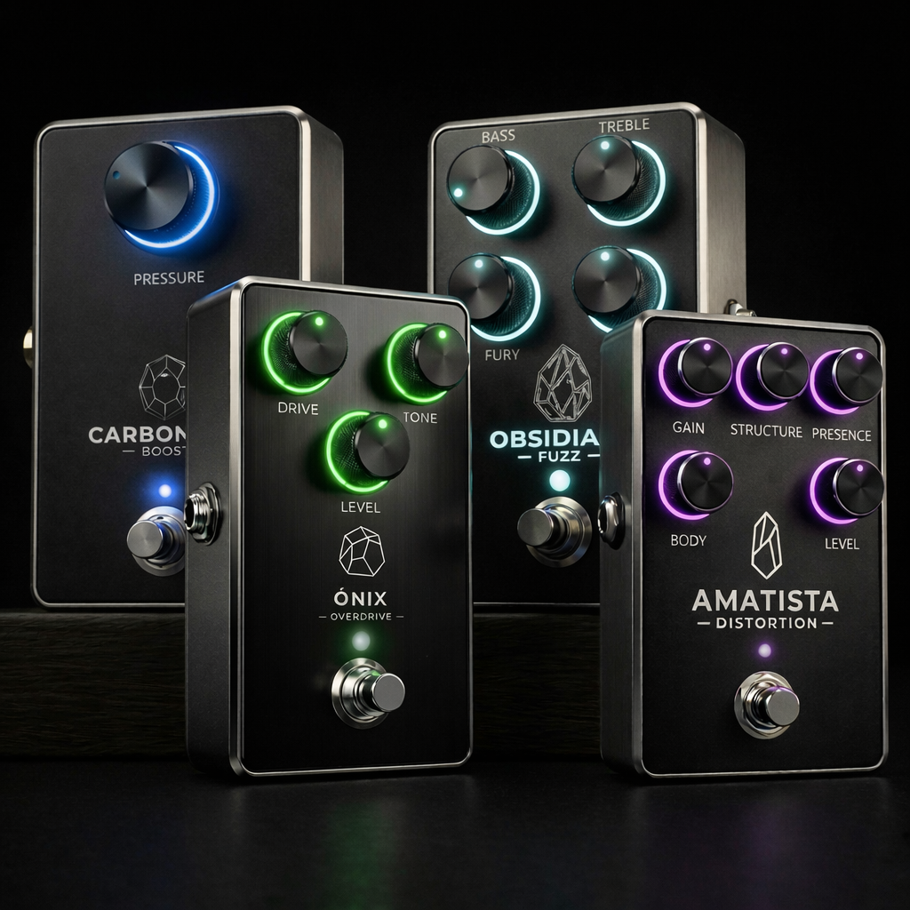
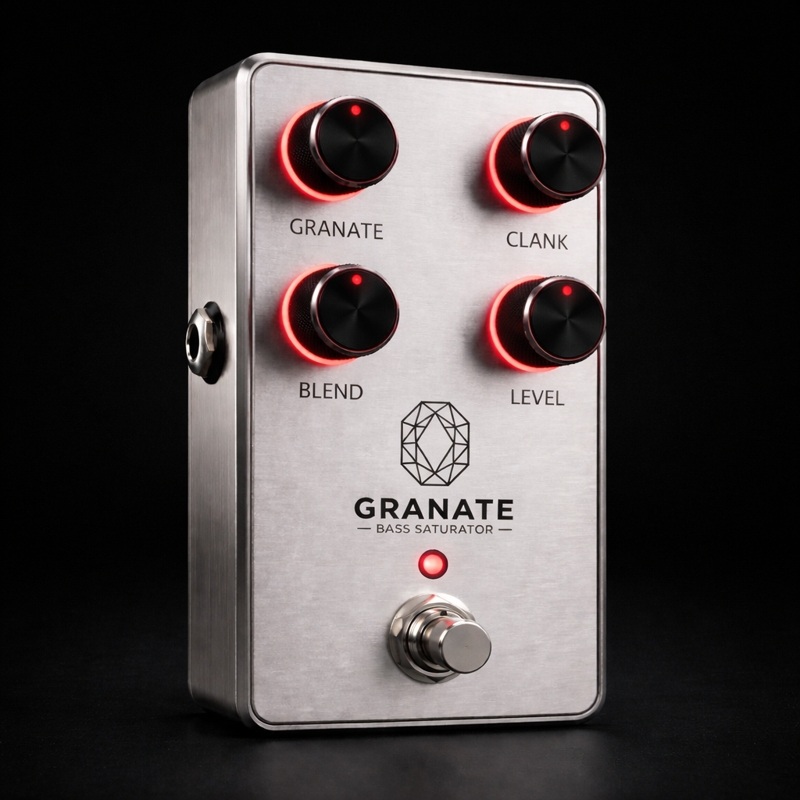

Nuestros Plugins
Familia Impulso Primario

Carbonado Boost Gratis
Ideal en contexto de afinaciones bajas hi-gain. Empuje transparente para limpiar y apretar tu señal antes del amplificador. Endurece el ataque y mejora la definición.
- +20dB de limpieza pura
- Ecualizador de un solo botón



Familia Frecuencia Base

Granate Bass Gratis
Saturación moderna con procesamiento paralelo: mantiene el low-end sólido mientras aporta carácter y textura al rango medio.
- Mezcla controlada (Clean/Drive)
- Definición en afinaciones graves
Próximamente
Alianzas con artistas del metal moderno en camino.
Familia Impulso Primario
Carbonado Boost Gratis
Ideal en contexto de afinaciones bajas hi-gain. Empuje transparente para limpiar y apretar tu señal antes del amplificador. Endurece el ataque y mejora la definición.
- +20dB de limpieza pura
- Ecualizador de un solo botón
Familia Frecuencia Base
Granate Bass Gratis
Saturación moderna con procesamiento paralelo: mantiene el low-end sólido mientras aporta carácter y textura al rango medio.
- Mezcla controlada (Clean/Drive)
- Definición en afinaciones graves
Próximamente
Alianzas con artistas en camino.